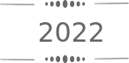

常に動いていないと落ち着かない、
マグロのような人間です。


常に動いていないと落ち着かない、
マグロのような人間です。
コバヤシ ア ミ
コバヤシ アミ
web designer
Numerology No.9
Hometown Nagano
Residence Tokyo
苦い現実と向き合う勇気をもて
Once upon a time is up to you
Coffee / Tea / Books / Cafe
Sun rise / Flowers / Hot spring
Wine / Trip
※Monstyleコーチング®️とは
自分の生き方の軸＝Styleの発見を
お手伝いするメンタルコーチングのこと。
通販総合商社に新卒で入社。子会社である株式会社リフレに出向。商品開発部、商品チームに配属。 健康食品、機能性表示食品、医薬部外品の商品開発を担当。
商品開発と並行して、オフラインの媒体にて既存顧客に向けたDM制作のディレクションを兼任. 自身で顧客のLTV向上を目的とした販促企画にもチャレンジ。テスト発行、本番展開にて目標クリアし 既存顧客向けDMの主軸となる企画を立ち上げました。

既存商品のリニューアルを継続しつつ、染毛剤（医薬部外品）の商品開発にチャレンジ。 また、上司の立て続けの退職にあたりチームの新人教育、OJTを担当しました。 11月に産休に入るまで商品に関する問い合わせから商品開発、スケジュール管理などチームの中心となって業務に携わりました。

Webデザイナーへの転職が第一目標です。
現職での経験を通し、商品やサービスに対し愛と情熱を持つ方々と仕事をしたいと強く思うようになりました。
デザイン制作だけでなく、数字の検証も行いながら目標達成できるデザインを作り上げていきたいと考えています。少しでも多くのクライアントの課題解決に貢献し、
エンドユーザーが良いサービスに辿り着けるようデザインを通して
お手伝いできれば嬉しいです。
Webデザイナーに
転職することが第一目標です。
現職での経験を通し、
商品やサービスに対し
愛と情熱を持つ方々と仕事をしたいと強く思うようになりました。
デザイン制作だけでなく、
数字の検証も行いながら
目標達成できるデザインを作り上げていきたいと考えています。
少しでも多くのクライアントの
課題解決に貢献し、
エンドユーザーが良いサービスに辿り着けるよう
デザインを通してお手伝いできれば嬉しいです。
この度は当サイトをご覧くださりありがとうございます。
制作のご依頼、ご相談、ご質問等はこちらからお願いいたします。
送信完了後、48時間以内にご連絡いたします。
(万が一返信がない場合は再度ご連絡いただくか、Instagramにて
DMいただけますと幸いです。)
この度は当サイトをご覧くださり
ありがとうございます。
制作のご依頼、ご相談、ご質問等は
こちらからお願いいたします。
送信完了後、48時間以内に
ご連絡いたします。